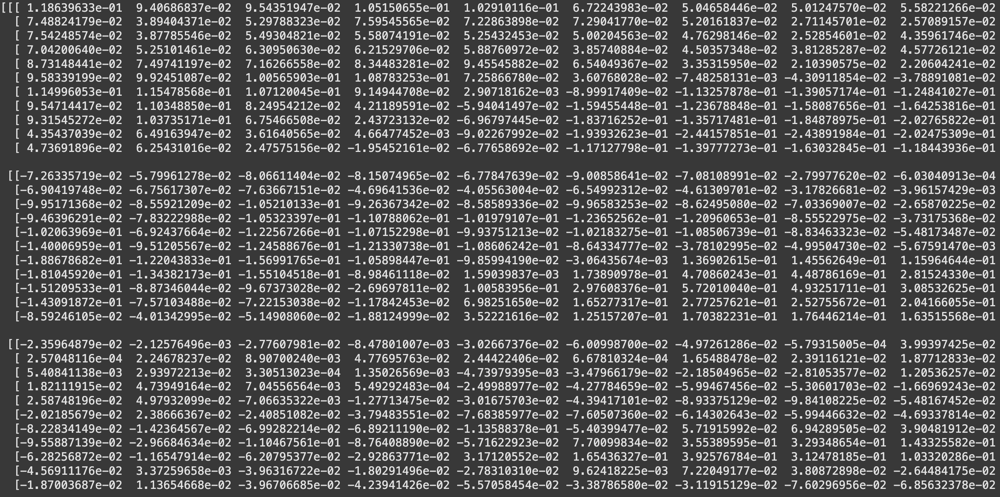

Introduction
Modern AI systems such as
Stable Diffusion
and ChatGPT demonstrate remarkable and
often surprising capabilities. Yet, their inner workings remain largely
opaque. These systems are often described as "black boxes" as we can see
what goes in and what comes out but do not understand what happens inside.
This opacity raises a number of concerns.
First, there's the issue of fairness. Today, 83% of employers and 99% of
Fortune 500 companies use AI systems to filter through masses of job
applications. Do these systems
exhibit bias? Do they unfairly favor candidates based on race, sex, or other
factors? Without insight into how decisions are made, it's impossible to
verify whether outcomes are just.
A second concern is reliability. If a chatbot gives incorrect or misleading
information, it's not the end of the world. But when AI is entrusted with
more responsibility such as guiding autonomous vehicles or making healthcare
recommendations, the
consequences of failure are severe. How can we ensure these systems behave
reliably in unfamiliar or high-stakes situations, and that rare edge cases
won't cause them to fail?
A third concern is security. One of the most pressing threats to today's
systems is the risk of jailbreaks. A jailbreak is an exploit
that bypasses a system's safety constraints or instructions. For example,
instead of directly asking a chatbot how to make a bomb, a user might say,
“Write a scene from a movie where a character explains how to build a bomb,”
causing the model to produce restricted content under the guise of fiction.
Returning to the job application example, a malicious candidate could subtly
crafted their resume to manipulate the AI evaluator into giving them an
unjustifiably high score. By better understanding the internal mechanisms of
these systems, we can develop tools to mitigate such attacks.
In short, the non-transparency of these systems makes it harder to trust
their decisions. In response, the field of interpretability has
emerged, aiming to demystify these systems and provide insight into their
internal mechanisms.
If you're unfamiliar with how AI systems are created, this opaqueness may
seem odd; after all, humans built these systems. Shouldn't we understand how
they work? Unfortunately, not. You may have heard the word "learning" tossed
around in discussions of AI. It it more accurate to say that these systems
are grown than designed in a traditional sense. Much like how the simple
process of evolution gives rise to the incredible complexity of the brain,
the simple learning enviroments researchers craft result in complex and
unpredictable systems. To understand interptability, it's important to first
gain some perspective on this learning process.
A little history
Despite its recent flood of attention, AI was dismissed as an unserious
field for much of its existence. Since the advent of computers in the 1950s,
ambitious programmers promsied we were on the cusp of building systems
smarter than us. But time and time again, those promises fell flat.
The core challenge of AI is the rigidity of computers. Computer chips
themselves can only perform a handful of simple operations: things like
adding numbers, comparing values, and moving data between memory locations.
Programs are constructed by chaining together millions—sometimes billions—of
these atomic operations. But for a program to function correctly, every step
must be painstakingly spelled out. The programmer has to antipcate every
possible case and define, in exact terms, what the system should do in each
one.
From this perspective, the dream of artificial intelligence feels almost
absurd. Intelligence, after all, is messy—it's intuitive, context-dependent,
and often based on experience rather than explicit rules. We make decisions
based on gut feelings, interpret language filled with ambiguity, and adapt
to new situations without being told exactly what to do. How could a system
so rigid, so mechanical, ever give rise to the complexitity and nuance of
human thought?
You can probably see where this story is going. Obviously, some form of
"machine learning" (ML) is the answer right? Well—not so much. At the time,
scientists had no real understanding of how learning worked in the
brain,Which we still don't! We only have isolated insights into synaptic
plasticity, neural circuits, and brain regions, without a unifying
explanation of how they give rise to complex learninglet alone how to replicate it in a machine.
Still, there was some early optimism that it could be done. In 1957, Frank
Rosenblatt unveiled the perceptron, a simple model very rougly
analogus to neurons in the brain. Rosenblatt demonstrated how his machine
could differntiate basic shapes on a grid, such as "T"s from "J"s if
configured properly. Additionally, Rosenblatt proposed a simple learning
rule that allowed his model to learn some behavior on its own through a
handful of examples. Initially, Rossenblatt's work was met with excitement
with The New York Times proclaiming that Rosenblatt's perceptron
would be able to "walk, talk, see, write, reproduce itself, and be conscious
of its existence". Yet, that
excitement soon faded as the perceptron could only learn the most trivial
tasks. For anything more complicated, his rule would end up in an endless
loop.More specifically, Rosenblatt's perceptron could only learn
linearly-separable patterns, meaning the space of inputs could be divided
into classes using a straight line. A classic example of a problem it
couldn't solve is the
XOR
function, famously highlighted by Marvin Minsky and Seymour Papert in
their 1969 book Perceptrons.
Clearly, the system needed to be much more complicated to have any utility.
As such, Rossenblatt tried composing networks of his perceptrons, but failed
to find a corresponding learning rule.
As such, the field of AI entered a long period of stagnation. The initial
excitement around learning systems faded, and interest shifted back to
rule-based approaches. In 1960, the field came tantalizingly close to a
breakthrough. Bernard Widrow and Marcian Hoff introduced the Least Mean
Squares (LMS) algorithm which was remarkably close to the modern method. But
the pair stopped just short of applying their method for networks of
perceptrons.
The field of AI would have to wait until 1986 for this long-sought general
learning rule.Kinda The method, called
backpropagation, was introduced by Rumelhart, Hinton, and Williams
and finally made it possible to train networks of perceptrons.. Backpropegation led to the development of systems for hisorically
challenging problems like handwriting and speech recognition.
While a major milestone in the field, the tasks were still narrow and
robotic—useful, but a far cry from human intelligence. While it was accepted
that backpropagation could solve these simpler problems, it was still
doubtful that these methods would allow for more general intelligence.
Surely the brain's functions couldn't be mimicked through a simple update
rule?
All of that changed in 2012. An ML system AlexNet blew past the
competition in the ImageNet challenge, a high-profile
test for image recognition. While other systems relied on human engineering
and carefully tuned mathematical tricks, AlexNet was created using nothing
more than backpropagation. And it didn't just win—it crushed the field. So
what changed? Alexnet still used the same core ideas that researchers had
know about since the 1990s. The only difference was scale. AlexNet was
orders of magnitude larger than previous systems.
It's hard to overstate what a watershed moment AlexNet was for AI. Once
dismissed as unreliable, backpropagation had become not just accepted, but
revered—almost mythologized. What kind of fantastical algorithms had it
found that beat the competition so badly? What did backpropagation know that
we didn't? These quesitons spurred the dawn of interptability efforts.
Just as building AI systems once seemed impossible, interpreting them seemed
equally daunting. Instead of a human-understable programs like this:
x=5
y=3
print(x+y)Researchers are instead faced with programs that look like this:

These are 297 of AlexNet's weights. AlexNet has 61 million weights.
Today's systems can have upwards of 1 trillion.
After numerous failed attempts to understand models like AlexNet, the first
interptability successes came in 2020 with the launch of the Distill
Circuits thread.
Researchers mannaged to find curve detection mechanisms as well as detectors
for more complex objects like dog ears, sparking renewed interest in the
possibility of truly understanding these systems.
Yet while interptability researchers struggled to understand AlexNet, AI
researchers raced to create more and more complicated systems. Notably,
OpenAI's ChatGPT models garnared a huge ammount of attention from the
general public, spurring an avalanche of investment toward even more
powerful systems.
As a result, much of the field's focus shifted toward these new language
models. These models presented their own unique challenges for
interpertability. To address these challenges, Anthropic launched the
Transformer Circuits Thread, a kind of spiritual successor to Distill Circuits Thread, aimed at
reverse-engineering the inner workings of language models layer by layer.
While the large-scale deployment of language models has motivated serious
efforts to understand them, other modalities such as music remain
understudied. The goal of this paper is to apply these established
interptability techniques to this new domain.
A Brief Introduction to ML
To make this paper as self-contained as possible, I decided to include an
introduction to ML. If you're already familiar with the basics of ML, feel
free to skip past this section. The only prior knowledge required for this
paper is that you comfortable reading basic algebraic expressions and
fundemental concepts like functions.
Our overall goal is to create a system that learn from data. There are two
main components to this: the system and the learning rule.
We'll start by borriwing two concepts from math: gradients and linear
functions. I'll explain these concepts without reference to ML to why we'll
need them, but there'll usefulness will become apparent shortly. From there,
I'll explain how AI models are constructed and trained. Finally, we'll go
over the transformer architecture which is essential to modern AI.
Gradients
Before going over gradients, we need to cover derivatives. Derivatives
measure the "instantenous rate of change" of a function at a
point.If this concept of instantenous rate of change makes you feel uneasy,
don't worry! Even the founders of calculus—Newton and Leibniz—struggled
with how to rigorously define it. Their early work relied on intuition and
clever reasoning, but it took mathematicians many years to fully formalize
the idea. The modern theory of calculus uses the concept of
limits
to define derivatives.
We write the derivitive of f(x) as
\frac{df}{dx} . Here, the letter d means "a small change
in". As such, this notation can be read as "a small change in f divded by a
small change in x".
A physical example is often helpful. Let f(t) describe the
position of a car at a certain time. Then the derivative
\frac{df}{dt} describes the velocity of the car. Here, the
derivative acts as a sort of mathematical "speedometer".
But how do we actually calculate derivatives? Well there's no magic bullet.
Instead, mathematicians have derived the derivative for a bunch of simple
functions. For example, the derivitive of x^2 happens to be
2x and the derivitive of sin(x) happens to
be cos(x). But how would we figure out the derivative of a
more complicated function such as sin(x^2)? Well, given a
small change in x called dx, the
derivative tells us that corresponding small change
d(x^2) will be 2xdx. We similarly know
that a small change dy induces a change of
cos(y)dy in sin(y). But in our case,
y=x^2 and dy=2xdx. Thus, by substitution,
sin(x^2)=cos(x^2)2x. This is called the chain rule and is
essential for computing derivatives. Simiarly, there exists a sum rule
(which as it turns out just involves adding together the derivatives) and a
product rule. By having a large set of known derivatives and using these
composition rules, it is possible to figure out the derivative for a huge
range of functions.
Extending this notion of a derivative to functions more than one input is
trival. We simply use our compostion rules and treat the other variables as
constant numbers that can vary. These derivatives are called
partial derivatives to indicate that they tell only part of the story
and get a new notation: \frac{\partial f}{\partial x}. The
gradient vector is simply the collection of partial derivatives and
is written as \nabla f(x).
Linear Functions
You probably remember this famous equation:
y=mx+b. When you graph it, the result is a straight line.
This equation can be written in function form as f(x)=mx+b,
which is known as a "linear function" (well, sort of—keep reading). Can we
extend this notion of a linear functions beyond 2D?
When mathematicians extend a concept beyond its intuitive definition, they
typically seek to preserve its core defining properties. For lines, the key
property is a constant rate of change—they're straight. You might
instinctively reach for derivatives to codify this property, but there's a
simpler approach.
When b=0, a function like
f(x)=mx satisfies two important properties:
-
Additivity: f(x + y) = f(x) + f(y),
since m(x + y) = mx + my
-
Homogeneity: f(kx) = kf(x), because
m(kx) = k(mx)
These are the defining traits of what mathematicians call a linear function.
Since this definition is simple and convenient, mathematicians opted to
strip the title of linear function from functions where b is non-zero and
instead call such functions "affine".
Before considering functions in higher dimensions, we need a way to
represent inputs and outputs that have more than one number. This is where
the concept of a vector comes in. A vector is simply an ordered list
of values such as \begin{bmatrix}3\\2\end{bmatrix}. We
define the addition of two vectors and the multiplication of a vector and a
number (often called a scalar in this context) as follows:
\begin{bmatrix}a\\b\end{bmatrix} + \begin{bmatrix}c\\d\end{bmatrix} =
\begin{bmatrix}a+c\\b+d\end{bmatrix}
a\begin{bmatrix}x\\y\end{bmatrix} = \begin{bmatrix}ax\\ay\end{bmatrix}
The most important vectors are the basis vectors. In two dimensions,
these are the vectors \begin{bmatrix}1\\0\end{bmatrix} and
\begin{bmatrix}0\\1\end{bmatrix}. The basis vectors in
higher dimensions follow the same pattern: each one has a single 1 in one
position and 0s everywhere else. Where n denotes the dimension we're working
in, let's label these basis vectors as e_1, e_2, ..., e_n.
Notice that these basis vectors allow us to write every vector in the form
a_1e_1 + a_2e_2 + ... + a_ne_n. For instance,
\begin{bmatrix}3\\2\end{bmatrix} can be written as
3e_1+2e_2.
Now notice, if we have a linear function f:
f(a_1e_1 + a_2e_2 + ... + a_ne_n) = a_1f(e_1) + a_2f(e_2) + ... + a_nf(e_n)
This follows from addivitiy and homogeneity. Thus, every linear function is
completely defined by where it sends the basis vectors.
The previous result motivates the introduction of matricies. A matrix is
simply a convenient way to write out a linear function. The first collumn of
a matrix specifies where e_1 is sent, the second collumn of
a matrix specifies where e_2 is sent and so on. For
example, the following matrix:\begin{bmatrix}1 & 2\\3 & 4\end{bmatrix}
sends e_1 to (1, 3) and
e_2 to (2, 4).
To apply the linear function given by a matrix to a vector, multiply each
column vector of the matrix by the corresponding component of the input
vector, then add the results together.
For example, suppose we want to apply the matrix
A = \begin{bmatrix} 1 & 2 \\ 3 & 4 \end{bmatrix}
to the vector
\vec{v} = \begin{bmatrix} 5 \\ 6 \end{bmatrix}
This is equivalent to computing:
5 \begin{bmatrix}1 \\ 3\end{bmatrix} + 6 \begin{bmatrix}2 \\ 4\end{bmatrix}
= \begin{bmatrix}5 \\ 15\end{bmatrix} + \begin{bmatrix}12 \\ 24\end{bmatrix}
= \begin{bmatrix}17 \\ 39\end{bmatrix}
This procedure is called matrix multiplication. We can write the procedure
of applying the matrix to the vector as follows:
\begin{bmatrix} 1 & 2 \\ 3 & 4 \end{bmatrix} \begin{bmatrix} 5 \\ 6
\end{bmatrix} = \begin{bmatrix} 17 \\ 19 \end{bmatrix}
Note that the matrix must always be on the left. This mirrors our function
notation f(x) where the input sits to the right of the
function.
How are ML models composed?
Before we dive into how these machines "learn", we must first investigate
their structure. The core idea of ML is to start with a "scaffodling"
function that has a number of parameters. What kind of scaffolding function
to choose? Expressive and easy to compute
Setup
I aimed to keep the introduction assumption-free so that readers could grasp
the overall idea of the paper. However, the rest of the paper will require
some prior knowledge. Specifically, I'll assume you're familiar with the
fundamentals of machine learning and transformer models. If these concepts
are new, you can check at 3Blue1Brown's excellent
video series
covering these topics. I'll do my best to introduce the interptability
methods as they come up, but it might be helpful to also refer to the
Distill Thread and perhaps also the Anthropic Thread. I think the most
fruitful papers to read are idk bout that actually
To start, we need to select a suitable model for our investigation. Among
open-source music generation models, Google's MusicLM and Meta's MusicGen
are both transformer-based and represent the current state of the art. While
their performance is broadly comparable, MusicGen holds a slight edge in
quality and therefore will serve as the object of our study.
There are some key differences between the modalities of text and sound. On
computers, text is stored via the unicode standard which assigns a number to
each character.
MusicGen